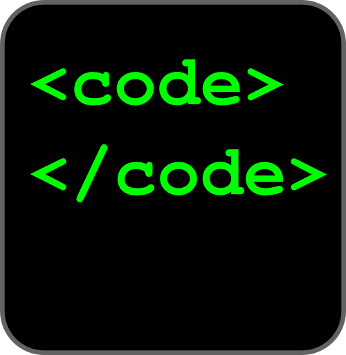
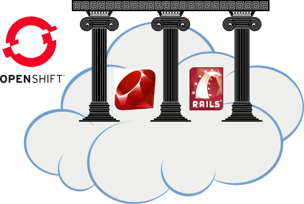
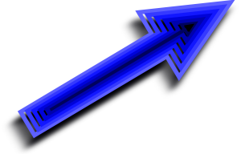
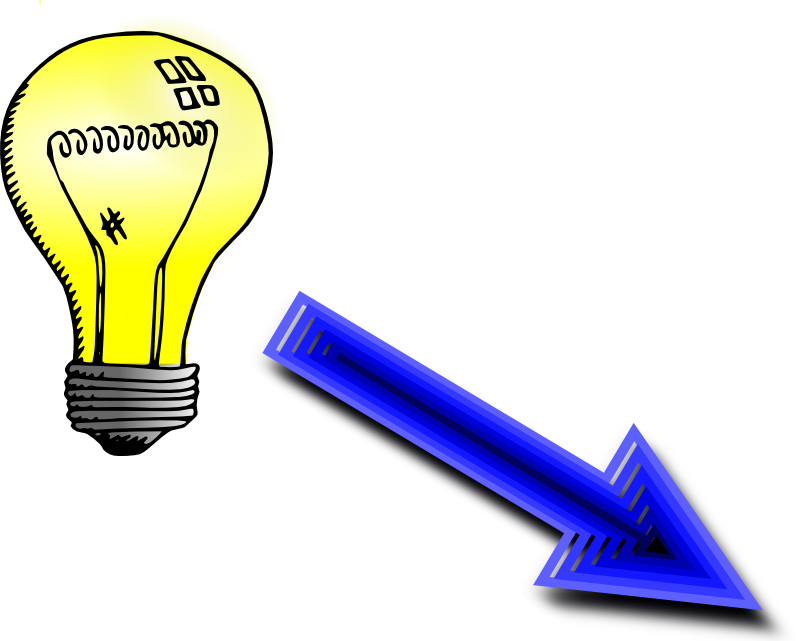

Get Your PaaSInto Gear

An Introduction To OpenShift
Katie Miller (@codemiller)
OpenShift Developer Advocate at Red Hat
Agenda
Prerequisites
What's a PaaS?
The cloud sandwich

How PaaS can make you happy
Red Hat's PaaS
Three flavours
Free goodies
OpenShift Silver
Build your own PaaS
How it works
Developer workflow
   Terminology
Languages and frameworks
Demo
Resources
Image credits
Questions
Get Your PaaSInto Gear
http://paas.codemiller.com
Katie Miller (@codemiller)
OpenShift Developer Advocate at Red Hat